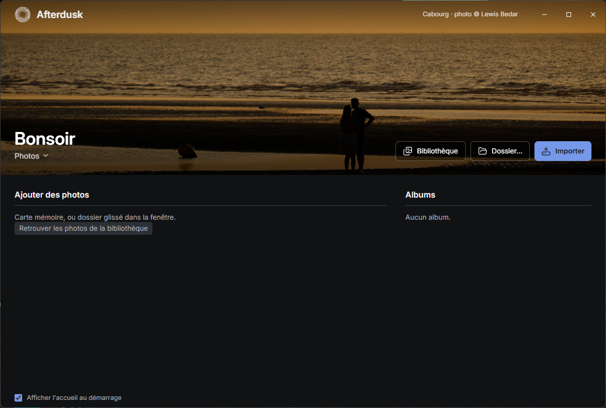

A day of photos, from memory card to delivery.
Afterdusk is free, open source desktop software for semi-pro photographers who find Lightroom and Capture One too heavy. It imports, culls, edits and exports your photos, on Windows and macOS, with no account and no cloud.
In development. No installer is published yet: the software builds from source, following the README in the repository.
The workflow
The software follows the evening you come home with a full card, in four steps: Import, Cull, Edit, Deliver.
-
01
Import
Copy without losing anything.
- Files are copied, renamed and filed automatically, with a backup copy on a second drive if you set one up.
- Every file is verified by checksum. If the import is interrupted, it resumes cleanly on restart.
- Nothing is ever written to the card or the camera.
- Photos already imported are recognised and greyed out. Previews appear as soon as each file is copied, without waiting for the whole import.
- RAW formats tested: Fujifilm (RAF, X-Trans sensors included), Canon (CR3), Nikon (NEF), Sony (ARW), Panasonic (RW2) and DNG.
-
02
Cull
From the keyboard, one photo after another.
- Ratings, flags and colour labels from the keyboard, also saved to an XMP file next to the original that other software can read.
- Compare two to four photos side by side, with synchronised zoom.
- Bursts are grouped into stacks.
- Rejects go to an internal trash: you can restore them, and it empties itself after 30 days.
- In progress: spotting blurry, badly exposed or closed-eye photos, computed on your machine, with a “Likely misses” filter.
-
03
Edit
Without ever touching the original.
- RAW development on the graphics card, with a neutral default rendering that stays close to the camera's.
- Automatic lens corrections (lensfun database), crop, straighten and dust removal.
- Built-in and personal presets, copy and paste settings, sync across a series.
- History, snapshots, virtual copies and before/after view.
- Edits are written to the XMP file: they come back even if the database is rebuilt.
-
04
Deliver
The right file for each use.
- Five export presets: originals, full quality, web, Instagram and print. JPEG, HEIF, AVIF, TIFF and PNG, with several presets in one go.
- Watermark as text, as an image or with your studio logo. Strip GPS, the camera serial number or all metadata.
- In progress: numbered PDF contact sheets, with a header and an optional watermark. Then a web gallery to send to a client, who ticks their favourite photos.

Afterwards
Once the day is filed, Afterdusk keeps track of places and gear.
A map of your albums
The location comes from the photos' GPS, a GPX track, a smartphone photo taken the same day, or manual placement. The camera's clock offset is corrected.
Country and city are found offline. Each album becomes a point on a world map, and drawing an area on the map filters the photos.
A gear inventory
Every camera and lens read from your photos gets its own record, with usage statistics. Accessories are added by hand.
A maintenance log sends reminders (sensor cleaning, servicing), and the inventory exports to PDF or CSV for insurance.
Principles
- Real folders
- Your photos stay in folders you can browse in your file manager. Ratings and edits are written to an XMP file next to each original: the library stays usable without Afterdusk.
- An original is never modified
- Edits are settings, applied on display and on export. Deleting always goes through the internal trash.
- Everything stays on your computer
- No account, no cloud, and analysis runs locally. The software only connects for map tiles, update checks and, if you turn it on, FTP reception on your local network. Each of these can be switched off in Settings.
- Unplugged external drive
- A library on an external drive can still be browsed when the drive is unplugged, thanks to the preview cache.
- Free and open source
- Code released under the GPL v3. Free of charge, with an interface in French and English. The repository is on GitHub.
Progress
The project moves one version at a time. Each version has its list of criteria, ticked only once tested on both Windows and macOS.
-
V0.1, Import and cull
12 of 14 criteriaStill to do: detecting an SD card in under 5 seconds, and moving from one photo to the next in under 100 ms.
-
V0.2, Edit and deliver
9 of 11 criteriaStill to do: the full set of adjustments with visual feedback in under 100 ms, and exporting 100 photos in under 2 minutes.
-
V0.3, Map and gear
9 of 9 criteriaDone.
-
V0.4, Assistants and sharing
1 of 9 criteriaIn progress: detecting misses, video, client web gallery, contact sheets, clients and sessions, automatic import, then signed installers and automatic updates.
As of 21 October 2026. Details are in avancement.md in the repository (in French).